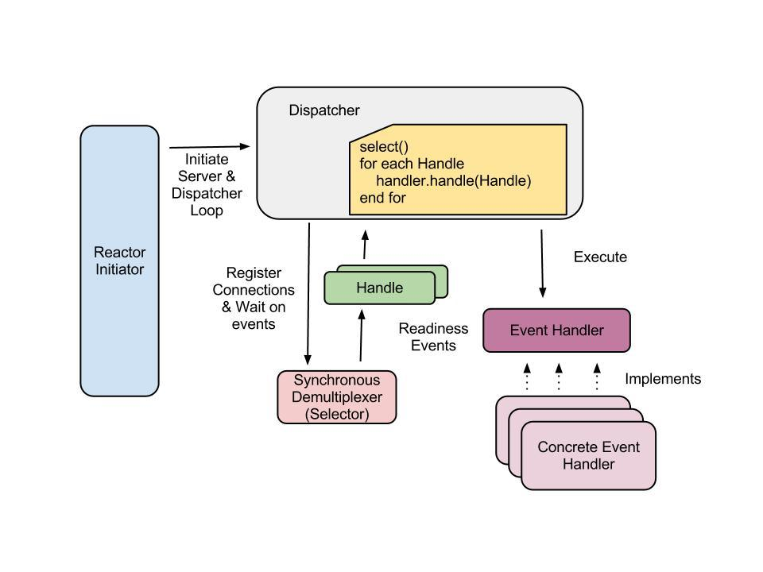
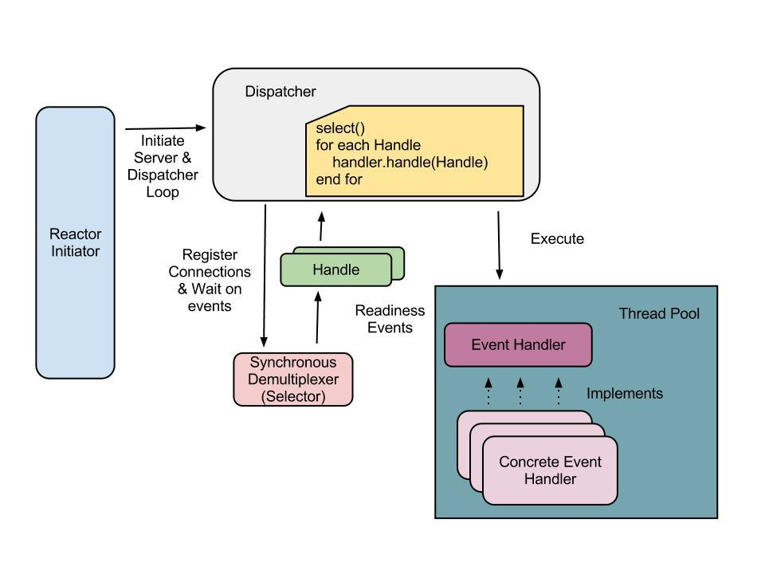
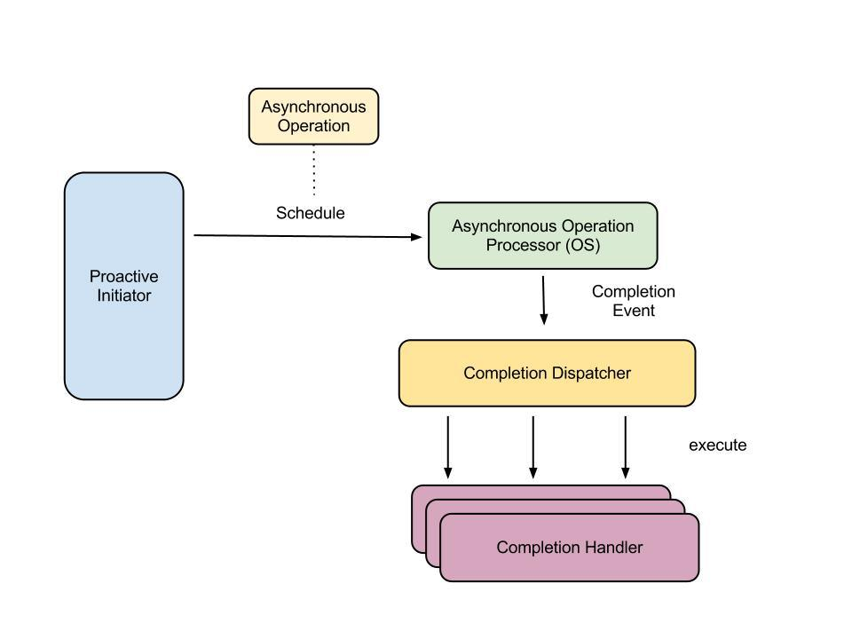

（译）IO 揭秘
原文：I/O Demystified
作者：Buddhika Chamith
译者：being23
随着高扩展服务器设计的过度宣传以及nodejs的流行，我打算对IO设计模式做一次针对性的阅读，因为时间原因，这个事情直到现在才得以进行。在做了一番研究之后，我想最好将这个过程中学到的知识记录下，对于我和看到这篇日志的人来说以后有一个参考。好了，让我们跳上I/O这辆巴士去兜兜风吧。
I/O类型
根据操作是否阻塞，IO就绪/完成事件通知是同步还是异步，有四种不同的IO类型。
同步阻塞I/O
IO操作会阻塞应用直到结束，这是大多数web服务器中每个连接一个线程的基础。
当调用阻塞的read()或者write()时，通过上下文切换到内核完成IO操作，将数据拷贝到内核缓冲区。之后，内核缓冲区的数据会转移到用户空间应用缓冲区中，应用线程状态变成runnable，这时应用不再阻塞，并从用户空间缓冲区中读取数据。
每个连接一个线程模型试图通过限制每个线程一个连接来控制阻塞的影响，这样一来某个连接上的I/O操作不会阻塞其他并发连接。当每个连接的生命周期很短，数据链路延时还可以时，没问题。然而当生命周期较长或者链路延时较高时，如果线程池大小固定，线程被这些连接持有，有可能导致新来的连接饿死，因为阻塞状态的线程不可重用来处理新来的连接，否则如果每个连接一个线程，就会产生大量的线程，在高并发时大量的上下文切换会导致资源紧张。
|
|
同步非阻塞I/O
这种模式中，设备或者连接配置成非阻塞，这样read()和write()调用就不会阻塞。这通常表示如果操作不能即刻完成，会返回一个错误码表示操作将阻塞（POSIX中对应EWOULDBLOCK）或者设备临时不可用（POSIX中对应EWOULDAGAIN）。应用负责轮询直到设备就绪，读取所有数据。不过这种方式效率不高，因为每次调用会产生上下文切换，无论是否有数据可读。
带有事件就绪的异步非阻塞I/O
上一种模式的问题在于轮询和忙等待直到任务完成。当设备读/写就绪时才通知应用岂不是更好？这个模式就是这么做的。应用程序使用特殊的系统调用（跟平台相关——Linux提供了select()/poll()/epoll()，BSD提供了kqueue()，Solaris提供了/dev/poll），对某个设备（在Linux中称为文件描述符，因为所有的sockets都抽象成文件描述符）上的感兴趣的I/O操作（读或写）就绪事件进行注册。之后执行系统调用，一直阻塞直到至少有一个注册的文件描述符就绪。一旦上述条件成立，通过系统调用返回值获取就绪文件描述符，并在应用线程循环中顺序处理。
就绪连接的处理逻辑通常包含在用户提供的事件处理器中，仍然通过非阻塞的read()/write()从设备获取数据到内核，最终到用户空间缓冲区，这会产生一次到内核的上下文切换。More ever there is usually no absolute guarantee that it will be possible to do the intended I/O with the device since what operating system provides is only an indication that the device might be ready to do the I/O operation of interest but the non blocking read() or write() can bail you out in such situations.（通常不保证设备上期望的I/O会发生，因为操作系统仅仅暗示设备可能对感兴趣的I/O做好准备，但是非阻塞read()或write()可能不行？）不过这应该属于异常情况。
大致想法就是以异步方式获取就绪事件，注册事件处理器，一旦触发事件通知就进行处理。不难看出，所有这些可以在一个线程中完成，同时利用select()（这里我选择了一个代表性系统调用）一次可以返回多个就绪socket这一特点可以在多个不同连接间复用。这就是该模式的魅力之一，单线程一次可以处理大量连接的。这种模式通常称为“非阻塞I/O”模型。
Java通过NIO API抽象了不同平台系统调用之间的差异。socket/文件描述符抽象成Channels，Selectors封装了就绪事件选取系统调用。对某个就绪事件感兴趣的应用会注册一个Channel（通常SocketChannel是通过在ServerSocketChannel上调用accept()获取）到Selector中，获取一个作为处理器的SelectionKey，它持有Channel和注册信息。然后在Selector上调用阻塞的select()，它会返回一个SelectionKeys集合，然后由应用指定的事件处理器一个接一个处理。
|
|
带有事件完成的异步非阻塞I/O
事件就绪只能通知你设备/socket可以做某些事情了。应用本身仍然要干从设备/socket读取数据到用户空间缓冲区的脏活（更准确的说是通过系统调用让操作系统完成）。要是能够让操作系统在后台完成数据从设备到内核缓冲区，最终到应用缓冲区的转移，最终再通知你岂不更好？这就是称为“异步I/O”模式的基本思想。要达到这个目的需要操作系统支持AIO。在Linux中，从2.6版本开始，这种支持出现在aio POSIX API中；在Windows中，以“I/O Completion Ports”的形式出现。
在NIO2中，Java通过 AsynchronousChannel API 实现了对这种模式的支持。
操作系统支持
为了支持事件就绪和完成通知，不同的操作系统提供了不同的系统调用。对于事件就绪，基于Linux的系统可以使用select()和poll()。然而最新的epoll()由于性能好于select()或者poll()，更适合。实际中，select()受到选取时间随监视的文件描述符数目线性增长的影响。It is appearently notorious for overwriting the file descriptor array references. So each time it is called the descriptor array is required to be repopulated from a separate copy. Not an elegant solution at any rate.
epoll()有两种配置方式。分别是边沿触发和水平触发。在边沿触发中，只有检测到相关描述符的事件时才会发出通知。Say during an event-triggered notification your application handler only read half of the kernel input buffer.（也就是说在事件触发通知中，你的应用处理器只读取了内核输入缓冲区中一半数据。）下次即使还有未读的数据，也不会再收到关于这个描述符的通知，除非这个设备准备发送数据，从而产生一个文件描述符事件。另一方面，水平触发只要有数据可以读取就会触发通知。
在BSD中，相应的系统调用以kqueue的形式出现；Solaris中，根据版本或者是/dev/poll或者是“Event Completion”。Windows中等价的是“I/O Completion Ports”。
然而，至少在Linux中，AIO使用场景有些许不同。Linux下socket对AIO的支持有些可疑，有人认为在内核中实际使用的是事件就绪，然而在应用层提供了事件完成的异步抽象。不过，Windows通过“I/O Completion Ports”支持AIO。
I/O 模式 101
软件开发中模式无处不在。I/O也不例外。与NIO和AIO模型有关的几个I/O模式，见下面描述。
Reactor 模式
这种模式中由好多个组件构成。首先，我会逐一介绍，这样容易理解下面的示意图。
- Reactor Initiator：这个组件负责根据配置初始化非阻塞服务器和dispatcher。首先，绑定socket，并将其注册到demultiplexer，用于客户端连接上的accept就绪事件。然后每种类型（read/write/accept 等）就绪事件的事件处理器实现会注册到dispatcher。下一步启动dispatcher事件循环处理事件通知。
- Dispatcher：定义了注册，移除和分配事件处理器接口，用于对连接事件作出响应，包括一组连接上的连接接收，数据输入/输出和超时事件。在处理一个客户端连接时，相关的事件处理器（例如：接收事件处理器）将会向demultiplexer注册已接收的客户端channel（底层客户端socket的封装），同时指定对该channel需要监听的就绪事件类型。之后dispatcher线程会在一组已注册channel的解复用器上调用阻塞就绪选取操作。一旦一个或多个注册channel准备好I/O，dispatcher就会使用注册的事件处理器逐个处理返回的与就绪channel相关的“Handle”。重要的是这些事件处理器并不持有dispatcher线程，否则会影响到dispatcher处理其他就绪的连接。由于一个事件处理器的常用逻辑包括从就绪连接读取/写入数据，这会导致阻塞直到所有的数据在用户空间和内核空间的数据缓冲区间完成转移，这就是使用线程池中的不同线程运行处理器的适用场景。
- Handle：一旦channel成功注册到封装了连接channel和就绪信息的解复用器中就会返回一个handle。解复用器就绪选择操作会返回一组就绪的Handles。Java NIO 中等价成SelectionKey。
- Demultiplexer：等待一个或者多个注册的连接channel上的就绪事件。Java NIO 中等价成 Selector。
- Event Handler：指定了具有分发连接事件钩子方法的接口。这些方法需要由应用相关的事件处理器来实现。
- Concrete Event Handler：包含从底层连接读取/写入数据的逻辑，处理请求或者 initiate client connection acceptance protocol from the passed Handle（从传递的Handle中初始化客户端连接接收协议）。

事件处理器通常由线程池中的不同线程执行，如下图所示

使用这个模式实现的一个简单的echo服务如下（没有事件处理线程池）
|
|
Proactor 模式
这个模式基于异步I/O模型。主要组件如下：
- Proactive Initiator：这个组件用于初始化接收客户端连接异步操作。这通常是服务器应用的主线程。在Completion Dispatcher中注册Completion Handler来处理连接接收异步事件通知。
- Asynchronous Operation Processor：用于执行异步I/O操作，向应用层Completion Handler 提供完成事件通知。这通常是操作系统暴露的异步I/O接口。
- Asynchronous Operation：异步操作是由异步操作处理器在独立内核线程中完成。
- Completion Dispatcher：当异步操作完成时，负责回调应用Completion Handlers。当异步操作处理器完成一个异步初始化操作时，Completion Dispatcher执行应用回调。通常根据事件类型，将事件通知处理委托给合适的Completion Handler。
- Completion Handler：这个接口由应用实现，用于异步处理事件结束通知。

看下如何使用Java 7中新增加的Java NIO.2来实现这种模式（以一个简单的echo server作为例子）
|
|
每种结束事件（accept/read/write）由一个实现了CompletionHandler接口（Accept/Read/WriteCompletionHander 等）的的completion handler处理。状态变化由连接处理器管理。额外的SessionState参数可用于在一系列的完成事件中维护客户端会话相关的状态。
NIO Frameworks(HTTPCore)
如果你正在考虑一个基于NIO的HTTP服务器，恭喜你。Apache HTTPCore 库对使用NIO进行HTTP通信提供了良好支持。API在NIO层内置的HTTP请求处理之上提供了更高层抽象。一个最小的非阻塞的对于任何GET请求都返回一个dummy输出的HTTP服务器实现如下。
|
|
通过ServerHandler实现了处理就绪事件接口，IOReactor基本上封装了解复用器。
Apache Synapse（一个开源的ESB）包含一个良好的基于NIO的HTTP服务实现，其中NIO用于每个实例在恒定内存条件下有大量用户时进行扩展。The implementation also contains good debugging and server statistics collection mechanisms built in along with Axis2 transport framework integration.（这个实现还通过集成了Axis2传输框架，包含有一个良好的调试和服务器统计收集机制。）见1。
总结
处理I/O时有很多的选择，它们会影响到服务器的扩展性和性能。上述的每个I/O机制都有优缺点，所以要根据需要的扩展性和性能以及维护难易度来选择。这是一篇关于I/O的长篇大论。请不要吝啬你的建议，纠正或者评论，如果有的话。文中涉及到的服务端和客户端源码从这里下载。
参考
在学习过程中参考了许多材料。下面是其中一部分的有趣的
- http://www.ibm.com/developerworks/java/library/j-nio2-1/index.html
- http://www.ibm.com/developerworks/linux/library/l-async/
- http://lse.sourceforge.net/io/aionotes.txt
- http://wknight8111.blogspot.com/search/label/AIO
- http://nick-black.com/dankwiki/index.php/Fast_UNIX_Servers
- http://today.java.net/pub/a/today/2007/02/13/architecture-of-highly-scalable-nio-server.html
- Java NIO by Ron Hitchens
- http://www.dre.vanderbilt.edu/~schmidt/PDF/reactor-siemens.pdf
- http://www.cs.wustl.edu/~schmidt/PDF/proactor.pdf
- http://www.kegel.com/c10k.html